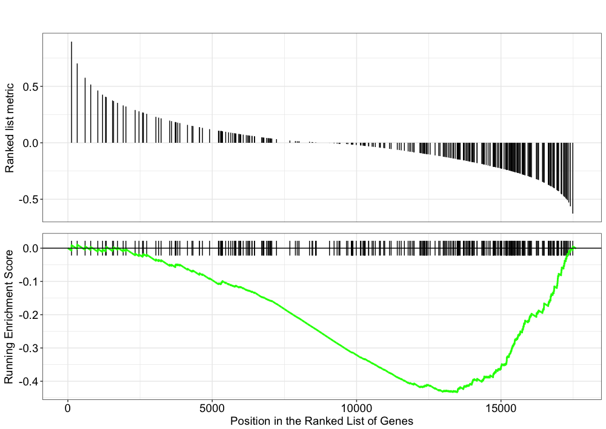
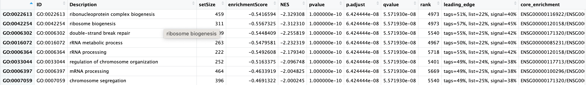
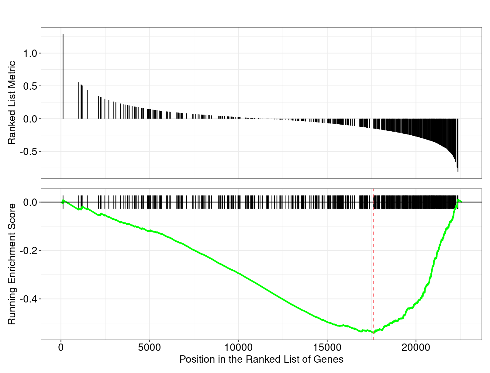
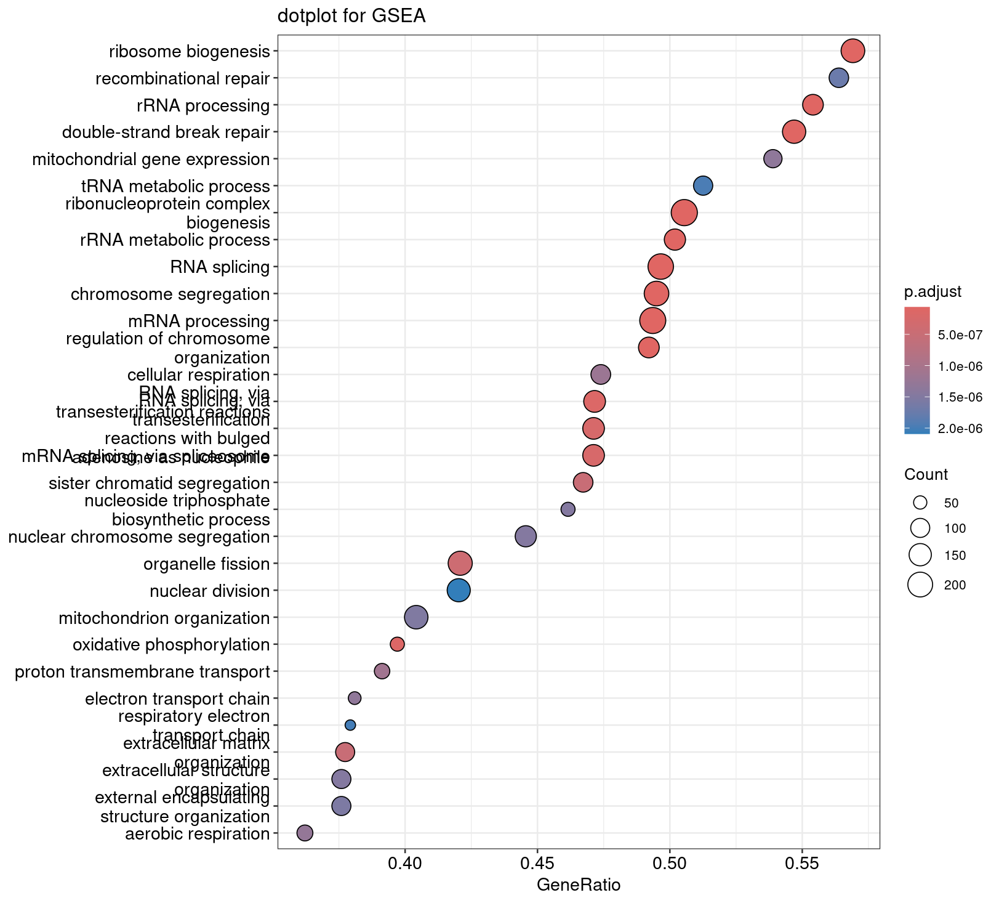
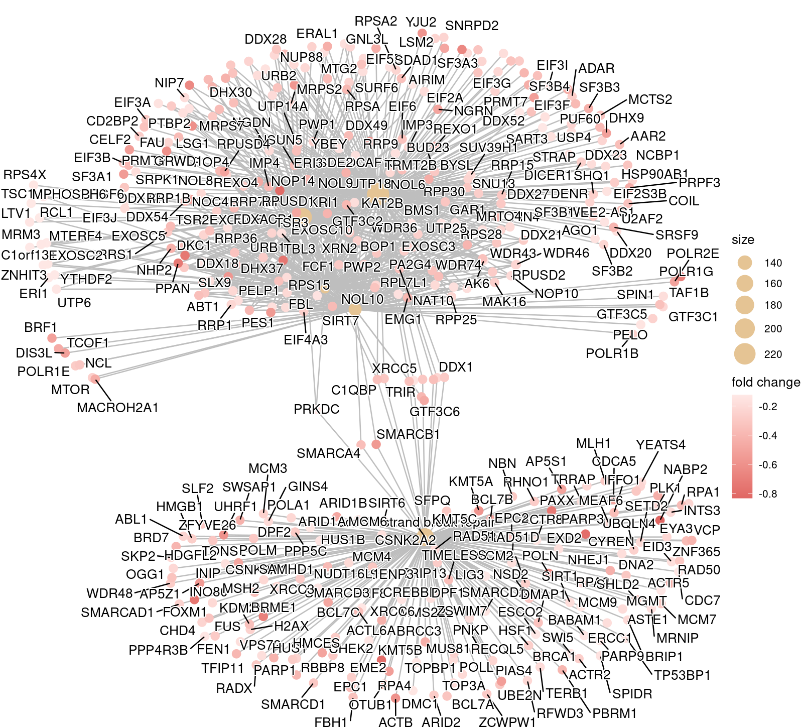
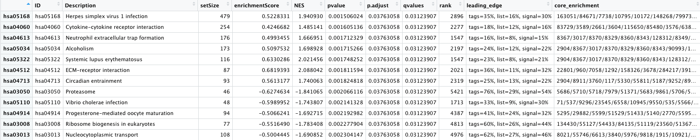
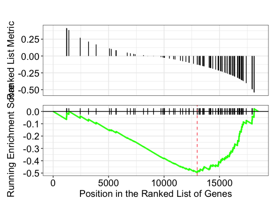
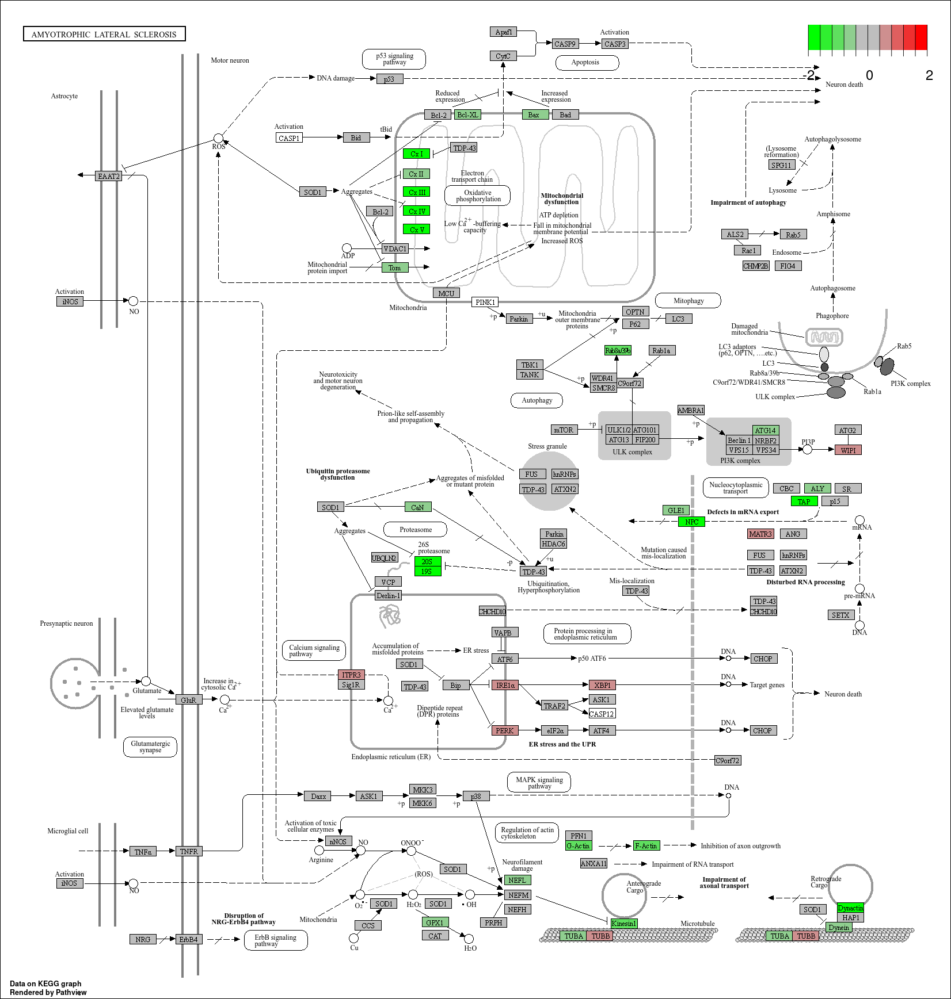

Approximate time: 60 minutes
Learning Objectives:
- Discuss functional class scoring, and pathway topology methods
- Construct a GSEA analysis using GO and KEGG gene sets
- Examine results of a GSEA using pathview package
- List other tools and resources for identifying genes of novel pathways or networks
Functional analysis using functional class scoring
In addition to over-representation analysis, there are other types of analyses can be equally important or informative for obtaining some biological insight from your results. The hypothesis behind functional class scoring (FCS) methods is that although large changes in individual genes can have significant effects on pathways (and will be detected via ORA methods), weaker but coordinated changes in sets of functionally related genes (i.e., pathways) can also have significant effects. Thus, rather than setting an arbitrary threshold to identify ‘significant genes’, all genes are considered in the analysis. The gene-level statistics from the dataset are aggregated to generate a single pathway-level statistic and statistical significance of each pathway is reported. This type of analysis can be particularly helpful if the differential expression analysis only outputs a small list of significant DE genes.

Gene set enrichment analysis using clusterProfiler and Pathview
One commonly used tool which is classified under Functional class scoring (FCS), is GSEA. Gene set enrichment analysis utilizes the gene-level statistics or log2 fold changes for all genes to look to see whether gene sets for particular biological pathways are enriched among the large positive or negative fold changes.

Gene sets are pre-defined groups of genes, which are functionally related. Commonly used gene sets include those derived from KEGG pathways, Gene Ontology terms, MSigDB, Reactome, or gene groups that share some other functional annotations, etc. [1].
Theory of GSEA
Now we are ready to perform GSEA. The details regarding GSEA can be found in the PNAS paper by Subramanian et al. We will describe briefly the steps outlined in the paper below:
h

This image describes the theory of GSEA, with the ‘gene set S’ showing the metric used (in our case, ranked log2 fold changes) to determine enrichment of genes in the gene set. The left-most image is representing this metric used for the GSEA analysis. The log2 fold changes for each gene in the ‘gene set S’ is shown as a line in the middle image. All genes are represented, but only those genes that are in gene set “S” are indicated with a black line and the rest are white/blank lines. The large positive log2 fold changes are at the top of the gene set image, while the largest negative log2 fold changes are at the bottom of the gene set image. In the right-most image, the gene set is turned horizontally, underneath which is an image depicting the calculations involved in determining enrichment, as described below.
Step 1: Calculation of enrichment score:
An enrichment score for a particular gene set is calculated by walking down the list of log2 fold changes and increasing the running-sum statistic every time a gene in the gene set is encountered and decreasing it when genes are not part of the gene set. The size of the increase/decrease is determined by magnitude of the log2 fold change. Larger (positive or negative) log2 fold changes will result in larger increases or decreases. The final enrichment score is where the running-sum statistic is the largest deviation from zero.
Step 2: Estimation of significance:
The significance of the enrichment score is determined using permutation testing, which performs rearrangements of the data points to determine the likelihood of generating an enrichment score as large as the enrichment score calculated from the observed data. Essentially, for this step, the first permutation would reorder the log2 fold changes and randomly assign them to different genes, reorder the gene ranks based on these new log2 fold changes, and recalculate the enrichment score. The second permutation would reorder the log2 fold changes again and recalculate the enrichment score again, and this would continue for the total number of permutations run. Therefore, the number of permutations run will increase the resolution of the significance estimates.
Step 3: Adjust for multiple test correction
After all gene sets are tested, the enrichment scores are normalized for the size of the gene set, then the p-values are corrected for multiple testing.
The GSEA output will yield the core genes in the gene sets that most highly contribute to the enrichment score. The genes output are generally the genes at or before the running sum reaches its maximum value (eg. the most influential genes driving the differences between conditions for that gene set).
GSEA with GO Terms
The clusterProfiler package offers several functions to perform GSEA using different genes sets, including but not limited to GO, KEGG, and MSigDb. We will use the GO gene sets in our examples below to compare with what we got for the ORA analysis. We already have everything we need in our annotations_edb_tested dataframe, since this analysis will also map using ENSEMBL IDs, so we can proceed.
GSEA will use the log2 fold changes obtained from the differential expression analysis for every gene, to perform the analysis. We will obtain a vector of fold changes for input to clusterProfiler, in addition to the associated Ensembl IDs:
## Extract the foldchanges
foldchanges <- annotations_edb_tested$log2FoldChange
## Name each fold change with the corresponding Ensembl ID
names(foldchanges) <- annotations_edb_tested$ensgene
Next we need to order the fold changes in decreasing order. To do this we’ll use the sort() function, which takes a vector as input:
## Sort fold changes in decreasing order
foldchanges <- sort(foldchanges, decreasing = TRUE)
head(foldchanges)
To run the actual analysis, we will first set the seed so that we all obtain the same result:
set.seed(123456)
NOTE: The permutations are performed using random reordering, so every time we run the function we will get slightly different results. If we would like to use the same permutations every time we run a function, then we use the
set.seed(123456)function prior to running. The input toset.seed()can be any number, but if you would want the same results, then you would need to use the same number as the lesson.
ego_gsea <- gseGO(geneList = foldchanges,
keyType = "ENSEMBL",
OrgDb = org.Hs.eg.db,
ont = "BP",
pvalueCutoff = 1.0,
pAdjustMethod = "BH",
verbose = FALSE)
Why did we pick pvalueCutoff = 1.0 again? NOTE: The results may look slightly different for you.

## Extract the GSEA results
gsea_go_results <- ego_gsea@result
# Write results to file
write.tsv(gsea_go_results, "results/gsea_go_results.tsv", quote=F, sep="\t", row.names=FALSE, col.names=TRUE)
-
The first few columns of the results table identify the GO term information
-
Enrichment Score and normalized enrichment score - represents the degree to which a set is over-represented at the top or bottom of the ranked list.
-
Normalized enrichment score (NES) - allows comparability across gene sets by accounting for differences in gene set size and in correlations between gene sets and the expression dataset. A positive NES is associated with pathway activation, and a negative NES is associated with pathway suppression.
-
Significance calculation (pvalue) using a permutation test on gene labels.
-
Adjustment of multiple hypothesis testing (p.adjust) and FDR control (qvalue).
-
Leading edge analysis outputs:
The leading edge subset of a gene set is the subset of members that contribute most to the ES. For a positive ES, the leading edge subset is the set of members that appear in the ranked list prior to the peak score. For a negative ES, it is the set of members that appear subsequent to the peak score. — GSEAUserGuide
tags - the percentage of genes before or after the peak in the running enrichment score, which is an indication of the percentage of genes contributing to the enrichment score.
list - where in the list the enrichment score is attained.
signal - enrichment signal strength.
-
Core enrichment: These are the genes associated with the GO Term which contributed to the observed enrichment score (i.e. in the extremes of the ranking). The genes are listed by Ensembl ID.
See more at this NCI BTEP Coding Club exercise.
NOTE: Instead of saving just the results summary from the ego_gsea object, it might also be beneficial to save the object itself. The save() function enables you to save it as a .rda file, e.g. save(ego_gsea, file="results/ego_gsea.rda"). The complementary function to save() is the function load(), e.g. ego_gsea <- load(file="results/ego_gsea.rda").
Graphically Exploring GSEA Results
Let’s explore the GSEA plot of enrichment of one of the pathways in the ranked list:
## Plot the GSEA plot for a single enriched pathway, `GO:0022613`
gseaplot(ego_gsea, geneSetID = 'GO:0022613')

clusterProfiler and the associated packages can create the same type of plots so we can compare with our ORA results:
Dotplot
dotplot(ego_gsea, showCategory=30) + ggtitle("dotplot for GSEA")

Enrichment Maps
The emapplot function supports results obtained from hypergeometric test and gene set enrichment analysis.
# calculate termsim
library(enrichplot)
ego_gsea_read <- pairwise_termsim(ego_gsea_read)
emapplot(ego_gsea_read, showCategory = 50)
 {width=”569”}
<img src=”../img/gsea_emapplot_50cat.png” width=”569/>
{width=”569”}
<img src=”../img/gsea_emapplot_50cat.png” width=”569/>
Cnet Plots
As for our ORA analysis, a cnetplot() depicts the linkages of genes and biological concepts (e.g. GO terms or KEGG pathways) as a network. **GSEA result is also supported with only core enriched genes displayed.
**
## convert gene ID to Symbol on the fly
ego_gsea_read <- setReadable(ego_gsea, 'org.Hs.eg.db', 'ENSEMBL')
## plot
cnetplot(ego_gsea_read, foldChange=geneList)

Incorporating other gene sets for GSEA
There are other gene sets available for GSEA analysis in clusterProfiler (Disease Ontology, Reactome pathways, etc.). In addition, it is possible to supply your own gene set GMT (Gene Matrix Transposed) file, and use that as input.
The Molecular Signatures Database (also known as MSigDB) is a collection of annotated gene sets. It contains 8 major collections:
- H: hallmark gene sets
- C1: positional gene sets
- C2: curated gene sets
- C3: motif gene sets
- C4: computational gene sets
- C5: GO gene sets
- C6: oncogenic signatures
- C7: immunologic signatures
Users can download GMT files from Broad Institute and use the read.gmt() function to parse the files. Alternatively, there is an R package that already packed the MSigDB gene sets in tidy data format that can be used directly with clusterProfiler. The msigdbr package supports several species and some example code is provided below:
# DO NOT RUN
library(msigdbr)
msigdbr_species()
## [1] "Anolis carolinensis" "Bos taurus"
## [3] "Caenorhabditis elegans" "Canis lupus familiaris"
## [5] "Danio rerio" "Drosophila melanogaster"
## [7] "Equus caballus" "Felis catus"
## [9] "Gallus gallus" "Homo sapiens"
## [11] "Macaca mulatta" "Monodelphis domestica"
## [13] "Mus musculus" "Ornithorhynchus anatinus"
## [15] "Pan troglodytes" "Rattus norvegicus"
## [17] "Saccharomyces cerevisiae" "Schizosaccharomyces pombe 972h-"
## [19] "Sus scrofa" "Xenopus tropicalis"
# Use a specific collection; example C6 oncogenic signatures
m_t2g <- msigdbr(species = "Homo sapiens", category = "C6") %>%
dplyr::select(gs_name, entrez_gene)
# Run GSEA
msig_GSEA <- GSEA(foldchanges, TERM2GENE = m_t2g, verbose = FALSE)
Functional analysis: Pathway topology tools
The last main type of functional analysis technique is pathway topology analysis. Pathway topology analysis often takes into account gene interaction information along with the fold changes and adjusted p-values from differential expression analysis to identify dysregulated pathways. Depending on the tool, pathway topology tools explore how genes interact with each other (e.g. activation, inhibition, phosphorylation, ubiquitination, etc.) to determine the pathway-level statistics. Pathway topology-based methods utilize the number and type of interactions between gene product (our DE genes) and other gene products to infer gene function or pathway association.
For instance, the SPIA (Signaling Pathway Impact Analysis) tool can be used to integrate the lists of differentially expressed genes, their fold changes, and pathway topology to identify affected pathways. There are step-by-step materials for using SPIA available.
Other Tools for Functional Analysis
Co-expression clustering
Co-expression clustering is often used to identify genes of novel pathways or networks by grouping genes together based on similar trends in expression. These tools are useful in identifying genes in a pathway, when their participation in a pathway and/or the pathway itself is unknown. These tools cluster genes with similar expression patterns to create ‘modules’ of co-expressed genes which often reflect functionally similar groups of genes. These ‘modules’ can then be compared across conditions or in a time-course experiment to identify any biologically relevant pathway or network information.
You can visualize co-expression clustering using heatmaps, which should be viewed as suggestive only; serious classification of genes needs better methods.
The way the tools perform clustering is by taking the entire expression matrix and computing pair-wise co-expression values. A network is then generated from which we explore the topology to make inferences on gene co-regulation. The WGCNA package (in R) is one example of a more sophisticated method for co-expression clustering (please note however that it is no longer maintained).
We previously used degPatterns for identifying groups of genes based on coxpression clustering, so one option for exploration could be to consider each group of genes from degPatterns in an overrepresentation analysis.
Resources for functional analysis
There are many web resources for running functional enrichment of various kinds. They may use different algorithms with different assumptions as well as different databases (or similar databases but updated at different times), so you will likely get different answers. They are probably all correct in their own way. There is no one true single answer; remember that the goal of functional enrichment is to get new ideas rather than to have a definitive answer.
- g:Profiler - http://biit.cs.ut.ee/gprofiler/index.cgi
- DAVID - https://david.ncifcrf.gov
- clusterProfiler - http://bioconductor.org/packages/release/bioc/html/clusterProfiler.html
- GeneMANIA - http://www.genemania.org/
- GenePattern - http://www.broadinstitute.org/cancer/software/genepattern/ (need to register)
- WebGestalt - http://www.webgestalt.org (need to register)
- AmiGO - http://amigo.geneontology.org/amigo
- ReviGO (visualizing GO analysis, input is GO terms) - http://revigo.irb.hr/
- GSEA - http://software.broadinstitute.org/gsea/index.jsp
- SPIA - https://www.bioconductor.org/packages/release/bioc/html/SPIA.html
- GAGE/Pathview - http://www.bioconductor.org/packages/release/bioc/html/gage.html
We are going to take a look at the websites for the following:
Reactome - https://reactome.org/
REACTOME is an open-source, open access, manually curated and peer-reviewed pathway database. Our goal is to provide intuitive bioinformatics tools for the visualization, interpretation and analysis of pathway knowledge to support basic and clinical research, genome analysis, modeling, systems biology and education.
The Reactome website is designed to literally give the user a graphical map of known biological processes and pathways that is also an interface which the user can ‘click through’ to authoritative detailed information on components and their relations. Reactome pathway, reaction and molecules pages extensively cross-reference to over 100 different online bioinformatics resources, including NCBI Gene, Ensembl and UniProt databases, the UCSC Genome Browser, ChEBI small molecule databases, and the PubMed literature database.
STRING - https://string-db.org/cgi/about
Collaboration between SIB - Swiss Institute of Bioinformatics, CPR - Novo Nordisk Foundation Center Protein Research and EMBL - European Molecular Biology Laboratory.
STRING is a database of known and predicted protein-protein interactions. The interactions include direct (physical) and indirect (functional) associations; they stem from computational prediction, from knowledge transfer between organisms, and from interactions aggregated from other (primary) databases.
The STRING database currently covers 59’309’604 proteins from 12’535 organisms. Interactions in STRING are derived from five main sources:
Genomic context predictions
High-throughput lab experiments
(Conserved) co-expression
Automated text mining
Previous knowledge in databases
Optional: GSEA with KEGG (outdated)
The clusterProfiler package offers several functions to perform GSEA using different genes sets, including but not limited to GO, KEGG, and MSigDb. We will use the KEGG gene sets in our examples below. The KEGG gene sets are defined using the Entrez identifiers, thus to perform the analysis we will need to acquire the corresponding Entrez IDs for our genes. We will also need to remove any genes that do not have an Entrez ID (NA values) and any duplicates (due to gene ID conversion) that may exist:
## Remove any NA values (reduces the data by quite a bit)
res_tested_entrez <- dplyr::filter(annotations_edb_tested, ENTREZID != "NA")
## Remove any Entrez duplicates
res_tested_entrez <- res_entrez[which(duplicated(res_entrez$ENTREZID) == F), ]
Discussion: What does our res_tested_entrez table now represent?
GSEA will use the log2 fold changes obtained from the differential expression analysis for every gene, to perform the analysis. We will obtain a vector of fold changes for input to clusterProfiler, in addition to the associated Entrez IDs:
## Extract the foldchanges
foldchanges <- res_entrez$log2FoldChange
## Name each fold change with the corresponding Entrez ID
names(foldchanges) <- res_entrez$ENTREZID
Next we need to order the fold changes in decreasing order. To do this we’ll use the sort() function, which takes a vector as input. This is in contrast to Tidyverse’s arrange(), which requires a data frame.
## Sort fold changes in decreasing order
foldchanges <- sort(foldchanges, decreasing = TRUE)
head(foldchanges)
###
First, we will set the seed so that we all obtain the same result:
set.seed(123456)
NOTE: The permutations are performed using random reordering, so every time we run the function we will get slightly different results. If we would like to use the same permutations every time we run a function, then we use the
set.seed(123456)function prior to running. The input toset.seed()can be any number, but if you would want the same results, then you would need to use the same number as the lesson.
To perform the GSEA using KEGG gene sets with clusterProfiler, we can use the gseKEGG() function. The organisms with available KEGG pathway information are listed here.
## GSEA using gene sets from KEGG pathways
gseaKEGG <- gseKEGG(geneList = foldchanges, # ordered named vector of fold changes (Entrez IDs are the associated names)
organism = "hsa", # supported organisms listed below
minGSSize = 10, # Default minimum gene set size (# genes in set)
pvalueCutoff = 1.0, # padj cutoff value
verbose = FALSE)
## Extract the GSEA results
gseaKEGG_results <- gseaKEGG@result
# Write results to file
write.tsv(gseaKEGG_results, "results/gseaOE_kegg.tsv", quote=F, sep="\t", row.names=FALSE, col.names=TRUE)
Why did we pick pvalueCutoff = 1.0 again? NOTE: The results may look slightly different for you.
## Write GSEA results to file
View(gseaKEGG_results)

- The first few columns of the results table identify the pathway information
- The following columns include the associated statistics
- The last column will report which genes are part of the ‘core enrichment’. These are the genes associated with the pathway which contributed to the observed enrichment score (i.e. in the extremes of the ranking). The genes are listed by EntrezID.
NOTE: The DOSE package has a handy function which allows us to easily convert the list of Entrez identifiers into gene symbols. This is possible if and only if there is an OrgDb available for your organism. The function takes the gseaKEGG object as input and returns the same object with the gene symbols in the ‘core enrichment’ column.
## Example Code gseaKEGG_geneSymbol <- setReadable(gseaKEGG, OrgDb = org.Hs.eg.db, keyType="ENTREZID")
Let’s explore the GSEA plot of enrichment of one of the pathways in the ranked list:
## Plot the GSEA plot for a single enriched pathway, `hsa05014`
gseaplot(gseaKEGG, geneSetID = 'hsa05014')

In this plot, the lines in plot represent the genes in the gene set hsa05014, and where they occur among the log2 fold changes. The largest positive log2 fold changes are on the left-hand side of the plot, while the largest negative log2 fold changes are on the right. The top plot shows the magnitude of the log2 fold changes for each gene, while the bottom plot shows the running sum, with the enrichment score peaking at the red dotted line (which is among the negative log2 fold changes). This suggests the down-regulation of this pathway.
Use the Pathview R package to integrate the KEGG pathway data from clusterProfiler into pathway images:
## Output images for a single significant KEGG pathway
pathview(gene.data = foldchanges,
pathway.id = "hsa05014",
species = "hsa",
limit = list(gene = 2, # value gives the max/min limit for foldchanges
cpd = 1))
NOTE: pathview may not display in your R Plots window. Instead, you may see a message such as
Info: Working in directory /vf/users/Bspc-training/user/DEanalysisandInfo: Writing image file hsa05014.pathview.png. This indicates that the image has instead been saved to that directory.

You can read more about Pathview output here, including a key to the different shapes and formatting in the figure above:
 {width=”416”}
{width=”416”}
NOTE: Printing out Pathview images for all significant pathways can be easily performed as follows, but since we have many pathways to deal with, I would not recommend running it now.
## Output images for all significant KEGG pathways get_kegg_plots <- function(x) { pathview(gene.data = foldchanges, pathway.id = gseaKEGG_results$ID[x], species = "hsa", limit = list(gene = 2, cpd = 1)) } purrr::map(1:length(gseaKEGG_results$ID), get_kegg_plots)
This lesson has been developed by members of the teaching team at the Harvard Chan Bioinformatics Core (HBC). These are open access materials distributed under the terms of the Creative Commons Attribution license (CC BY 4.0), which permits unrestricted use, distribution, and reproduction in any medium, provided the original author and source are credited.